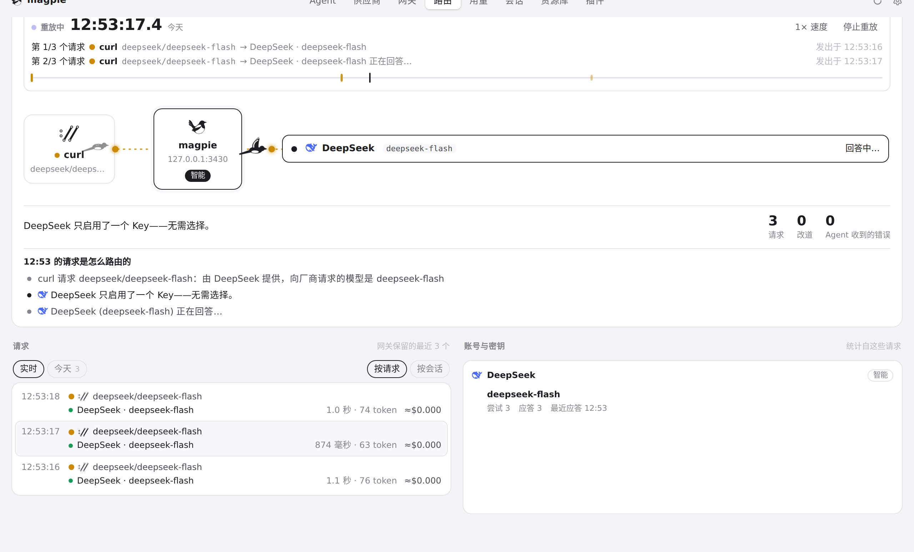
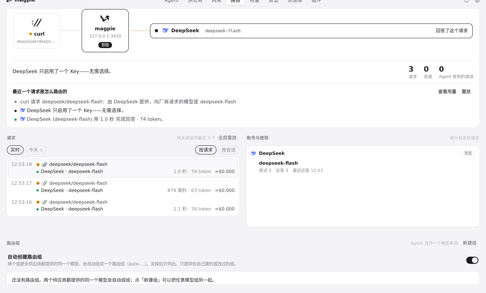
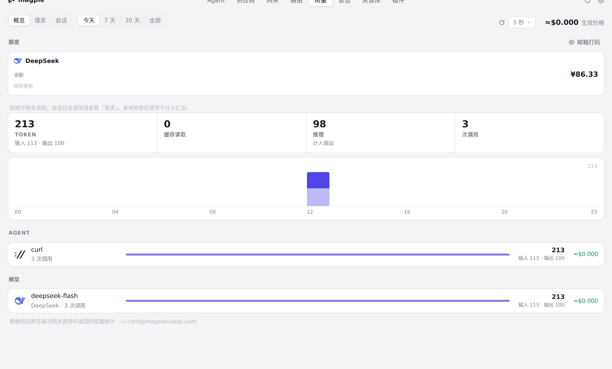
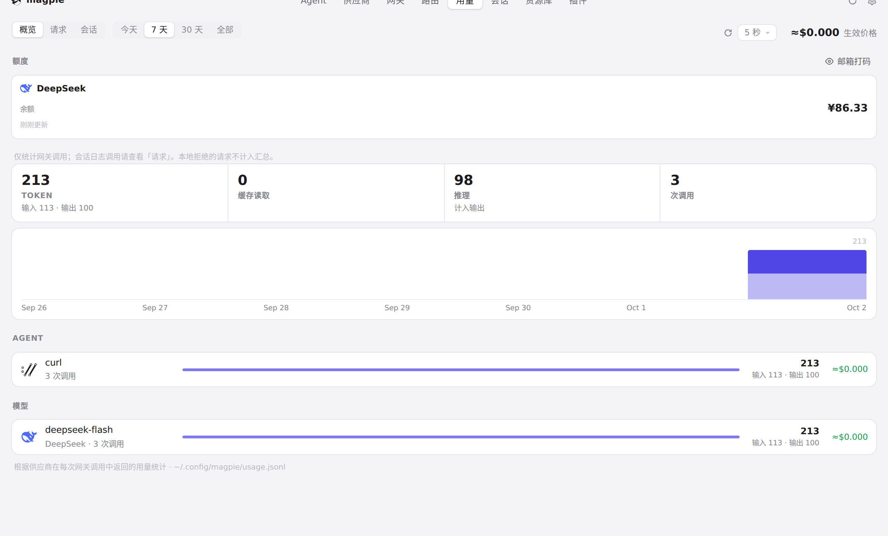
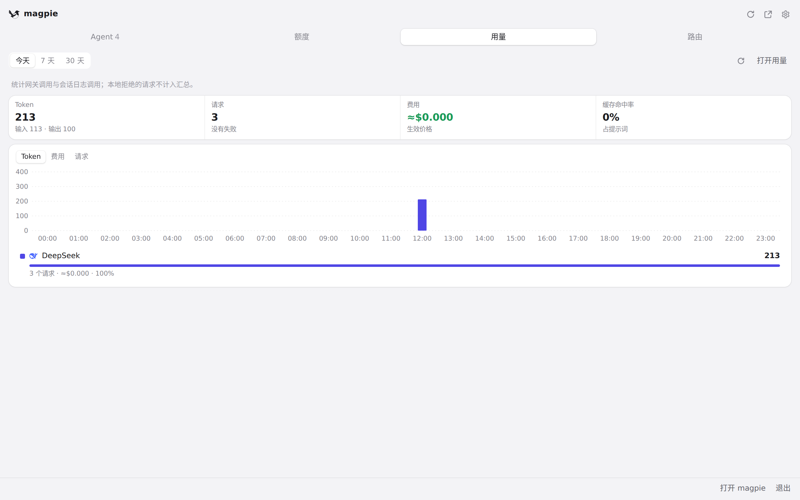
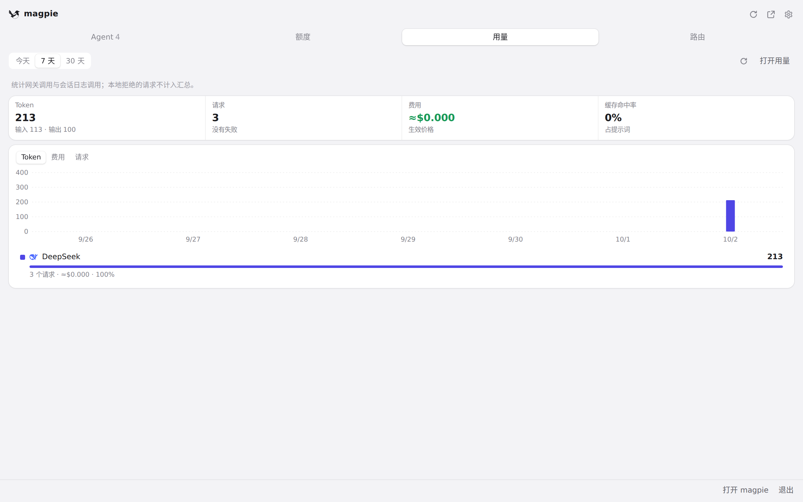

#551 界面预览
commit d4c7cf4 · 回到 PR · 这个 diff 把用量页与快捷面板的用量读取改成串行：同一时刻只发一个请求，读取期间到来的刷新或改选合并成一次后续读取，手动刷新的强制意图保留；同时让路由页在离开视野或文档隐藏时不再排帧、结束正在播放的重放，重新可见时再恢复。界面元素没有新增或改动，变化体现在刷新时序与路由动画是否继续。
红线是鼠标走过的轨迹，红色圆环是一次点击；底部文字是这一步在做什么。空格暂停，← → 逐段查看。

路由页离开视野后停止重放 · 重放进行中的路由页

路由页离开视野后停止重放 · 切回后的路由页

用量页的手动刷新与改选周期 · 用量「概览」页：刷新按钮与周期选择

用量页的手动刷新与改选周期 · 手动刷新并改选 7 天之后的用量「概览」

快捷面板「用量」标签的周期切换 · 快捷面板「用量」标签，默认的今天

快捷面板「用量」标签的周期切换 · 改选 7 天后的面板用量